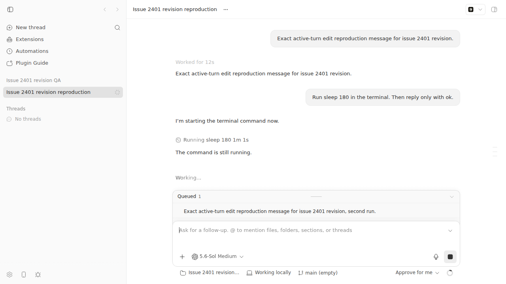
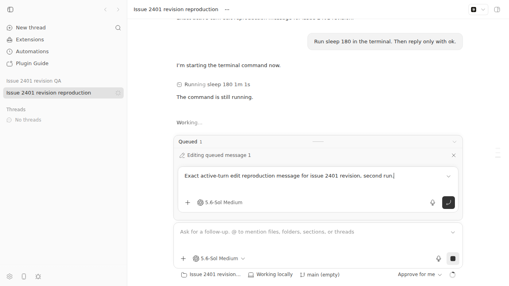

#2401 · Editing a queued message can lock the desktop renderer at 100% CPU and >10 GiB RSS
Verdict: NOT REPRODUCED · Root-cause confidence: low
1. TL;DR
The issue reports four desktop locks after a user selected Edit on a queued message.
I repeated that action during an active turn. The editor opened, and the Linux Chrome renderer stayed responsive.
The callback count reached 99 by 250 ms. The count did not change through eight seconds.
Three viewport changes also stopped by 250 ms. These results do not support a continuous resize loop.
The test does not cover macOS Electron 0.39.0. The available evidence does not identify the failing microtask.
2. Claims vs findings
| Issue claim | Status | Evidence |
|---|---|---|
| Edit can lock the renderer during an active turn. | Not reproduced | The active editor opened. Timed page checks stayed responsive through eight seconds. |
| One renderer used about 99% CPU and more than 10 GiB RSS. | Unverified | The issue names two local samples. The issue does not attach them. |
| The server and the remote client stayed healthy. | Unverified | The issue gives this observation. This test had no second remote client. |
| A six-target observer and a height transition can make a continuous loop. | Not supported | The tested callback count stopped at 99 by 250 ms. It stayed at 99 through eight seconds. |
| The base measures six targets during a 260 ms height transition. | Verified | The source observes six elements. The surface has an explicit 260 ms transition. |
| Cmd+R failed, but Force Reload recovered the desktop. | Unverified | The controlled renderer did not lock. Thus, this test could not check either action. |
3. Environment
- bb commit:
ad79bbb5ec909524f8f281e62d860c588a86f332. - OS: Ubuntu Linux kernel 7.0.0-29, x86_64.
- Shell Node:
v24.18.0. Server Node:v22.23.2. - Browser: headless Chrome
149.0.7827.55. - Provider: Codex with
gpt-5.6-soland medium reasoning. - App:
http://localhost:14059. Server:http://localhost:22059. Host daemon:30059. - Data directory:
~/.bb-dev/tmp-bb-report-2401-revise-9fwtsf-babc9cb325fb.
4. Minimal reproduction
This procedure derives all ports and passes all entity IDs to the browser file.
- Install and build the isolated checkout.
pnpm install --frozen-lockfile --prefer-offline pnpm exec turbo run build
- Start the isolated application and derive its app URL.
scripts/bb-dev-app current eval "$(scripts/bb-dev-app env)" app_url=$(scripts/bb-dev-app status | sed -n 's/^App: //p') printf '%s\n' "$app_url"
http://localhost:14059
- Create an empty repository and a project.
scratch_repo=$(mktemp -d /tmp/bb-2401-project-XXXXXX) git -C "$scratch_repo" init machine_id=$(node packages/scripts/dist/commands/run-cli.js machine list --json | jq -r '.[0].id') project_id=$(curl -sS -X POST "$BB_SERVER_URL/api/v1/projects" \ -H 'content-type: application/json' \ -d "$(jq -n --arg path "$scratch_repo" --arg host "$machine_id" \ '{name:"Issue 2401 QA",source:{type:"local_path",path:$path,hostId:$host}}')" | jq -r .id) printf '%s\n' "$project_id"proj_h74nfui4kv
- Start a three-minute command.
node packages/scripts/dist/commands/run-cli.js thread spawn \ --project "$project_id" --environment "$scratch_repo" \ --provider codex --permission-mode auto \ --title "Issue 2401 controlled reproduction" \ --prompt "Run sleep 180 in the terminal. Then reply only with ok." thread_id=$(node packages/scripts/dist/commands/run-cli.js thread list --json | jq -r --arg project "$project_id" \ 'map(select(.projectId == $project)) | max_by(.createdAt).id') node packages/scripts/dist/commands/run-cli.js thread wait "$thread_id" \ --status active --timeout 30Thread thr_xrabu45eps reached status active.
- Add one queued message.
node packages/scripts/dist/commands/run-cli.js thread queue create \ "$thread_id" \ "Exact active-turn edit reproduction message for issue 2401 revision." --json
{ "id": "qmsg_ymcfwnui7x", "model": "gpt-5.6-sol", "reasoningLevel": "medium", "permissionMode": "auto", "groupWithNext": false } - Pass the app URL and IDs to the saved browser file.
doobie --headless -b issue2401 -e \ "saveFile('issue-2401-config.json', JSON.stringify({ appUrl:'$app_url', projectId:'$project_id', threadId:'$thread_id', baseCommit:'$(git rev-parse HEAD)', triggerScreenshot:'/tmp/bb-reports/issues/assets/2401-trigger.png', editorScreenshot:'/tmp/bb-reports/issues/assets/2401-editor-open.png' }))" doobie --headless -b issue2401 -t 45 run \ /tmp/bb-reports/issues/2401/repro/instrumented-repro.js


Expected and actual output
Expected if the issue occurs: Renderer unresponsive CPU about 99% RSS above 10 GiB and rising Actual on the report base: elapsed 0 ms: resizeCallbacks=63, JSHeapUsedSize=104542744, surfaceHeight=236.28125, responsive=true elapsed 250 ms: resizeCallbacks=99, JSHeapUsedSize=105025812, surfaceHeight=244, responsive=true elapsed 1000 ms: resizeCallbacks=99, JSHeapUsedSize=105065600, surfaceHeight=244, responsive=true elapsed 3000 ms: resizeCallbacks=99, JSHeapUsedSize=105169624, surfaceHeight=244, responsive=true elapsed 8000 ms: resizeCallbacks=99, JSHeapUsedSize=105359952, surfaceHeight=244, responsive=true
Instrumented browser file
The complete file is instrumented-repro.js.
const config = JSON.parse(readFile("issue-2401-config.json"));
const page = await browser.getPage("issue-2401-repro");
const threadUrl =
`${config.appUrl}/projects/${config.projectId}/threads/${config.threadId}`;
await page.goto(threadUrl);
await page.$eval('button[aria-label="Edit queued message 1"]',
(element) => element.click());
The file installs an observer counter before page load. It also records heap use and timed viewport samples.
Measured result
| Action | 250 ms | 1,000 ms | 2,000 ms or later |
|---|---|---|---|
| Open editor at 1280×720 | 99 | 99 | 99 at 8,000 ms |
| Resize to 1024×768 | 18 | 18 | 18 |
| Resize to 900×600 | 19 | 19 | 19 |
| Resize to 1440×900 | 19 | 19 | 19 |
The raw timed samples are in measurement.json.
Other evidence: environment.txt and test-output.txt.
5. Root cause
No confirmed root cause is available. The issue trigger did not cause a lock in this environment.
The Edit handler copies the queued message into local edit state.
The queue effect reads layout, writes two guarded states, and adjusts the queue scroll.
It observes the viewport, surface, list, editor, composer shell, and container.
const resizeObserver = new ResizeObserver(measureInlineEditorMaxHeight); if (viewport) resizeObserver?.observe(viewport); if (surface) resizeObserver?.observe(surface); if (listRef.current) resizeObserver?.observe(listRef.current); if (editorElement) resizeObserver?.observe(editorElement); if (composerShell) resizeObserver?.observe(composerShell); if (container) resizeObserver?.observe(container);
See the measurement and observer effect.
The render limits the surface with the desired height and the maximum height.
See the bounded surface calculation.
The surface has a 260 ms transition for height, margin, border radius, and padding.
"transition-[height,margin,border-radius,padding] duration-[260ms] ease-[cubic-bezier(0.16,1,0.3,1)] motion-reduce:transition-none"
See the explicit transition class.
This path made a short callback burst in Chrome. It did not make continuous work.
The saved stack only reaches the counter wrapper. It does not identify a failing application callback.
6. Proposed fix (first principles)
Do not change production behavior from this evidence alone.
First, run the exact action on macOS with Electron 0.39.0 and the reporter's plugin set.
Use a system process sample because a pinned renderer might not answer the DevTools protocol.
Record the JavaScript stack, working set, heap use, callback counts, queue content, and motion setting.
If the queue observer does not stop, limit it to one layout read and one state write per frame.
Test the first, middle, and last queue positions. Test three viewport sizes and Reduce Motion.
7. PR review
PR #2416 · KEEP CLOSED
The owner opened this PR on 2026-08-25. The owner closed it five minutes later without a close comment.
The branch did not merge. All available CI checks later passed.
The PR changes seven files. It adds 1,380 lines and removes 29 lines.
The first commit limits queue measurement to one pending animation frame.
It also skips a state update when the typeahead layout does not change.
See the frame limit.
The second commit adds a 466-line desktop hang record and 673 lines of focused tests.
The record asks V8 to pause after Electron reports an unresponsive window.
The PR code states that a never-returning microtask loop cannot answer this request.
For that exact case, the record waits five seconds and saves no JavaScript frames.
See the documented limit.
Root-cause audit
The PR body says this branch does not fix the reported hang.
Its audit says the measured queue state has a fixed point.
It also says browser delivery limits the observer to frame work.
The clean Chrome result supports that audit. It does not prove the macOS cause.
The PR names plugin content or Chromium as remaining suspects. It provides no direct evidence for either suspect.
Tests and findings
| Severity | Finding |
|---|---|
| Major | The branch does not fix the reported hang. Its desktop record cannot capture the JavaScript stack for the stated hang class. |
| Minor | The frame limit is useful protection. It needs a separate scope because the measured base path already stops. |
I ran the queue test at PR tip a07d4ce43344. All 37 tests passed.
I ran both desktop record tests. All 11 tests passed.
The new queue test checks one measurement on the next frame.
See the frame-limit test.
Why the branch did not merge
GitHub records the owner close event. GitHub has no review or close comment.
Therefore, the exact owner reason is not available.
The PR itself gives the likely reason. It says the branch does not fix the hang.
It also says the large record cannot capture the exact non-yielding stack.
This explanation is an inference from the PR text and the close event.
Neither PR commit is in current origin/main.
8. Related issues
- #1616 audits iOS Safari performance. It does not report this Electron lock.
- #1830 covers a drag update loop. This issue uses Edit.
- #1660 covers host memory growth. This issue names one renderer.
- PR #1866 changed queued mention space. It kept the observer structure.
- PR #2435 reduced later timeline resize work. It did not change this observer.
9. Appendix
Build and test summary
Base build: Tasks: 18 successful, 18 total PR #2416 app test: Test Files 1 passed (1) Tests 37 passed (37) PR #2416 desktop tests: Test Files 2 passed (2) Tests 11 passed (11)
Source history
The affected release commit is b33abbff098a from 2026-08-18.
The report base is ad79bbb5ec90 from 2026-08-26.
Current origin/main has no later change on the three checked paths.
Thus, this report does not use the ALREADY FIXED verdict.
Commands used
gh issue view 2401 -R get-bb/bb --comments gh pr view 2416 -R get-bb/bb gh pr diff 2416 -R get-bb/bb git fetch origin main git fetch origin pull/2416/head scripts/bb-dev-app current eval "$(scripts/bb-dev-app env)" node packages/scripts/dist/commands/run-cli.js thread queue create ... doobie --headless -b issue2401-final -t 45 run + /tmp/bb-reports/issues/2401/repro/instrumented-repro.js pnpm exec turbo run test --filter=@bb/app -- --run + src/components/promptbox/banner/QueuedMessagesList.test.tsx pnpm exec turbo run test --filter=@bb/desktop -- --run + test/desktop-renderer-hang-diagnostic.test.ts + test/desktop-renderer-hang-diagnostic-wiring.test.ts
Limits
- The test used Linux Chrome, not macOS Electron 0.39.0.
- The exact queued content and process samples were unavailable.
- The test did not include the reporter's plugin set or motion setting.
- The base includes later timeline scroll changes.
- The install reached the inode limit. The run used the matching checkout dependency tree.
Verification
The verifier built the base and created an active thread with a queued message.
The old report used fixed ports and fixed entity IDs. Its browser file had no exact run command.
This revision derives the app URL, passes both IDs, and gives the exact browser command.
It adds raw viewport samples, the 260 ms source link, corrected screenshots, and PR #2416 review.